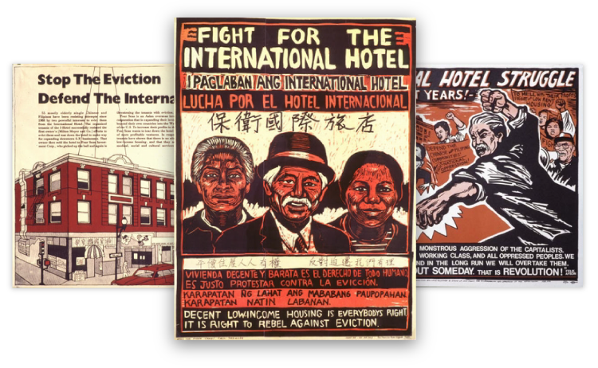
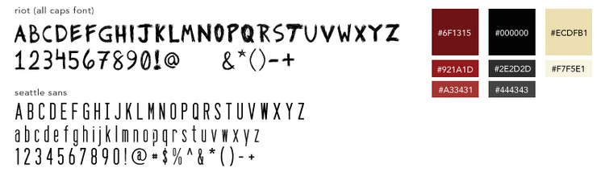
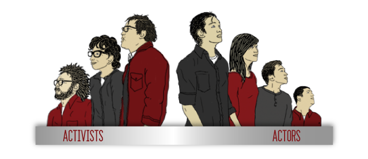
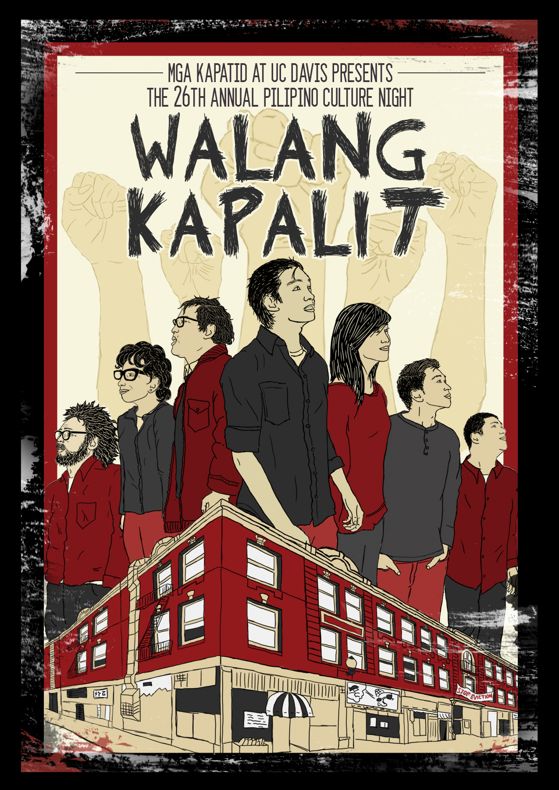
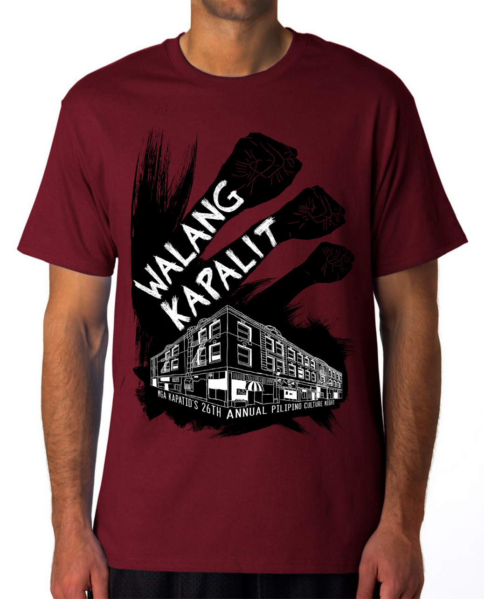

PILIPINO CULTURE NIGHT
Illustration & Branding
Mga Kapatid’s annual Pilipino Culture Night (PCN) production is a student-run celebration of Pilipino-American culture through acting, song, and dance. This project expresses the show’s culture and themes through illustration.
The 26th Annual Pilipino Culture Night is titled “Walang Kapalit” (translated as Irreplaceable) and is set in 1960/70’s San Francisco during the International Hotel Anti-Eviction Movement. The PCN coordinators needed a poster image that embodied the show’s themes of social justice, community empowerment, and cultural solidarity that would be used to promote the show.
Screen printed posters from the 1960/70's
The screen printing process was a major tool for the anti-eviction movement in getting their thoughts heard visually, so I wanted the main images to have an edgy screen-printed look similar to protest posters made in the 1960/70's.
Creating solidarity between the protesters during the I-Hotel movement and the audience members watching this PCN in the present was a major goal for the show’s scriptwriters and director. Illustrating people from both past and present onto the same image was a great way to embody this.
(From left to right)
1960/70's I-Hotel Activists: Al Robles, Estella Habal, Emil De Guzman.
Lead PCN Acting Cast: Kirby Araullo, Louise Ramos, Miles Orantia, Wayne Sy.
After illustrating each element, piecing together the final poster image that would be used in flyers, posters, and the show's program cover had a cinematic quality to it.
A fist in the air is seen as a symbol for empowerment and solidarity, so drawing these images subtly into the background was a great addition. I also used these fists for the production’s t-shirt screen print design.
With the show's many creative outlets, I also took photos of the acting cast, dances, music, and all participants to be displayed in the show's printed programs that were distributed to our audience.

Our costume coordinator and creative team were able to gather a bunch of vintage clothing for our participants to wear for their individual portraits. With some photo adjustments, the participant photos in our program also carried out the 1960/70's theme.
As a creative outlet for our culture, every aspect of this year’s PCN contributed to empowering the cast and audience about our history.